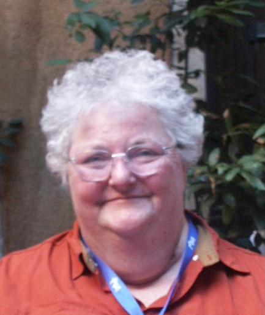

But, everyone calls me Obie!
As of July 1, 2009, I am Professor Emerita of Computer Science at Hiram College!
PROFESSIONAL STUFF
Home phone (please use only if I don't respond to email): 330-274-2704
Email: mailto:obie@hiram.edu
My vita/cv--- if you really want it
Professional interests: Most things in computer science including graphics, algorithm analysis, computing theory, parallel computing, operating systems, simulation, ethical issues, software engineering. and computer security , particularly. Hardware and database are OK, but ...
Information on Integrated Research Components (IRCs):Sample websites for two IRCs:
2008 CPSC 352: Computer Security IRC
2007 CPSC 361: Computer Simulation IRC
Poster presenting our model: * Integrated Research Components: Ensuring that all Students Can Have a Research Experience by Ellen L. Walker and Oberta A. Slotterbeck, presented at the SIGCSE 2006 Symposium.
> Paper presenting our model: Integrated Research Components: A Practical and Effective Alternative to Senior Projects by Ellen L. Walker and Oberta A. Slotterbeck, presented at the 2006 CCSC Midwest Conference. (Powerpoint Slides)
Daughter through the ages (see Trip albums below for recent pictures):
Wedding Day:
More wedding pictures are available at Bob Walker's site.
HOBBIES
Reading, traveling, watching graphics movies, swimming, and, of course, genealogy!
I read many books particularly in the science fiction, mystery, American and ancient history, and adventure genres. My special loves are short stories in science fiction and the mystery genre. I am in awe of an author who can plunk me into an entirely different world from today in only a few pages!
My husband and I both love digging out our roots. We found that each of us is related to Daniel Boone, he through a younger brother, Edward Boone, and me through an older sister, Sarah Boone Wilcoxson. That makes us 6th cousins once removed!! He has several lines that go back to Jamestown and I have several that came over on the Mayflower. We also share a 9th great grandfather and 9th great grandmother! In fact, I am related to people involved on both sides of the Salem witch trials--- my 8th great grandparents, Robert and Sarah Pease, were accused as witches by my 7th great grandparents, Thomas and Ann (Carr) Putnam and their daughter Ann Putnam, my 6th great aunt who was sister to my 6th great grandmother, Abigail (Putnam) Dale. (Oh, what a tangled web!)
Past hobbies I no longer pursue, but wish I could: Horseback riding and jumping, scuba diving (although I still snorkel), archery, classical toe and ballet dancing, and tap dancing.
TRIPS
(I need to set some of the links here and add some locations and photos )
Only available after 2001 when we bought a digital camera. Before 2001, we took slides. Someday we plan to find time to scan in the images from Spain, England, and France, as well as many camping trips to such places as many of the national parks, national forests, and historical sites.
Whenever we went to a conference that was near where some of our ancestors lived or worked, we squeezed in a couple of additional days to investigate museums and court houses for birth, death, probate, land, and other records.
2001 Alaska - Inside Passage - with Jonobie and Jeff
2003 Nice - IPDPD03 Conference
2004 Santa Fe, NM - IPDPS04 Conference
2008 Miami, FL - IPDPS08 Conference
2009 Mediterrean Cruise - with Bob and Ellen
2010 New Orleans, LA - SC10 Conference
2011 Alaska - IPDPS11 Conference
2012 Shanghai, China - IPDPS12 Conference
SC10 Confere
Hurricane Charley- In 1947, I first saw Gasparilla Island in Florida when my mother's sister Catherine moved there with my grandmother. Later my aunt became postmaster of its only village, Boca Grande. Originally the only access to the island was by ferry or train, but later a causeway was built. Legend has it that Gaspar, the pirate, had his home on Gasparilla Island. Supposedly his men were kept on Sanibel and his prisoners at Captiva, two islands to the south. His gold was supposedly buried on Cayo Pelau.
My mother built a home on the south part of the island in 1964 after my father died and invited my aunt to live with her. My mother was a resident of the island and very active in community affairs from 1964 until 1988 when we bought the home from her to use as a vacation home and a possible, future retirement home.
Bob and Ellen Walker visited us this summer from 9 Aug until 12 Aug and enjoyed the beach, a boat trip through adjacent islands, and our pool. Just after they left on Thursday, 12 Aug, we were told to evacuate the barrier island as hurricane Charley was heading up the Gulf. The TV newscasters concentrated on Port Charlotte as it is more of a population center. However, Charley swept over this tiny island just before it slammed into Port Charlotte. Friday, 13 Aug, was not a happy day for anyone in the area. We rode out the storm in Tampa. Bob and Ellen rode it out in Sarasota and came back to help us move furniture in the house on Saturday in 93+ temperatures with 89%+ humidity and hordes of mosquitoes inside the house through the open holes! We will always be grateful to them!
OUR REBUILT HOUSE - take a look!
It is said a picture is worth 1000 words. Here are Bob's and my pictures:
Map of the island area - red star is house on both this map and path map
Path of the eye of the Category 4 hurricane
My before-after pictures of the house
Links to Bob Walker's marvelous pictures:
Link to the Boca Beacon's pictures: Island newspaper photos
Some of my before and (a few after) around town pictures:
Before Charley house pictures:
{kind=link}
{kind=link}
{kind=link}
{kind=link}
{kind=link}
{kind=link}
{kind=link}
{kind=link}
{kind=link}
{kind=link}
{kind=link}